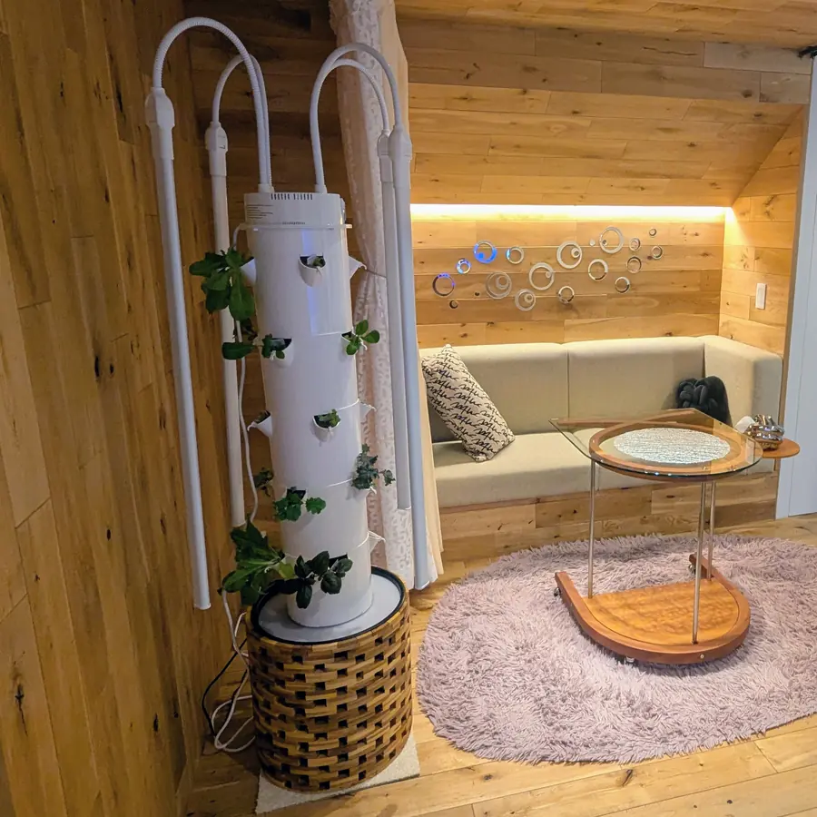
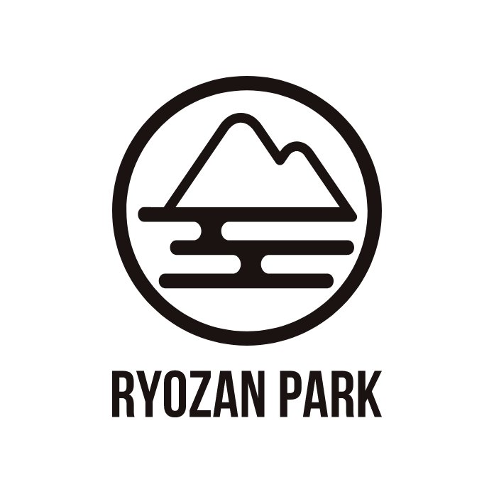

“My daughter came home and asked if we could grow lettuce on our balcony, and then explained how we could do it!”
Parent, Seisen International School


Hydroponic urban farming systems, education programs, and partnerships for schools, homes, communities, and organizations in Japan.


Saturday, December 12, 1:00–3:00 PM at Art Farm Ikejiri. Hands-on hydroponics for families and curious growers. No experience needed — just show up and get your hands wet.

December 14–23: pick any days. Hydroponics, science, engineering, and creative making for ages 5 and up. Registration is open now.

Grow fresh greens at home. Tower leases from ¥11,000/month, depending on the service level you choose. We deliver, set up, and teach you the basics.




“My daughter came home and asked if we could grow lettuce on our balcony, and then explained how we could do it!”
Parent, Seisen International School
“The kids talk about hydroponics at dinner now.”
Parent testimonial
“I never thought my two boys would fight over kale, but here we are.”
Parent testimonial
Harvests, workshops, and behind-the-scenes moments from our classrooms and towers.
Follow @greentopiajapan